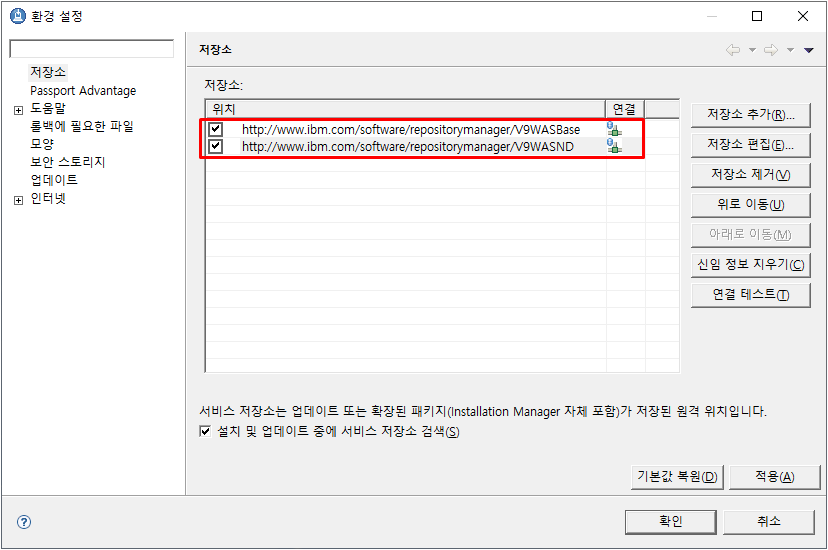
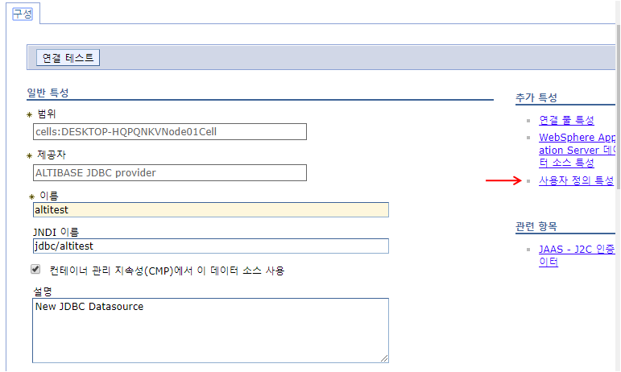
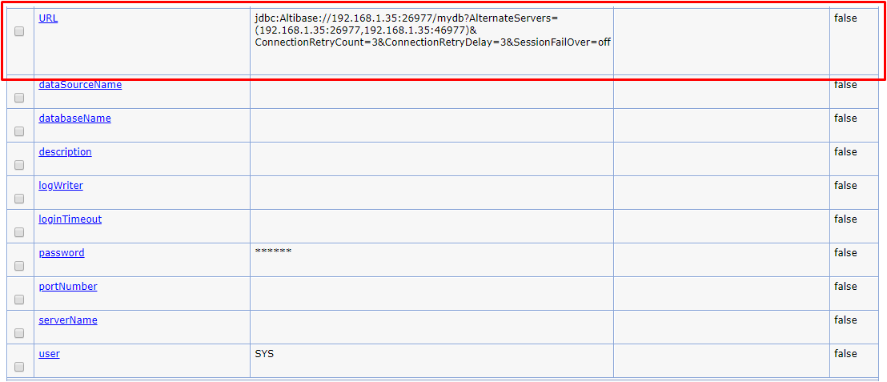

Overview
This document is a guide for operating Altibase and WebSphere. This document describes how to install WebSphere, how to set environment variables, and how to integrate Altibase and WebSphere.
This document based on the Altibase 7.1.0 and WebSphere 9.0 version.
WebSphere Installation
This chapter describes the process of downloading and installing WebSphere, the directory structure of WebSphere, and describes how to start and shut down WebSphere.
Basic Installation
Download WebSphere package.
To download WebSphere, the IBM Installation must be installed first.
(This document is based on IBM Installation Manager version 1.8.5.)
The link to download IBM Installation Manager is: https://www-945.ibm.com/support/fixcentral/swg/downloadFixes?parent=ibm~Rational&product=ibm/Rational/IBM+Installation+Manager&release=1.8.5.0&platform=Windows&function=fixId&fixids=1.8.5.0-IBMIM -WIN64-20160506_1125 & useReleaseAsTarget = true & includeRequisites = 1 & includeSupersedes = 0 & downloadMethod = ddp


The repository URL is:
- WAS V9: http://www.ibm.com/software/repositorymanager/V9WASBase
- WAS ND V9: http://www.ibm.com/software/repositorymanager/V9WASND

When the user clicks the Install button on the initial screen again, the package selection menu appears, and select IBM WebSphere Application Server.

Choose an installation path.


After the installation is completed, when the WebSphere Customization toolbox 9.0 automatically runs, click the Create button.

Select an application server.
Choose Create Profile.

If the user does not select the management security option, the user is logged in as blank.
When the creation is completed, the user can check the information of the set profile.

The installation contents are as follows.

WebSphere Directory Structure
After installing WebSphere, the user will able to see the following directories:

If the user installed WebSphere without any changes during installation (installed on C:\IBM), the path of C:\IBM\WebSphere\AppServer will be the environment variable WAS_INSTALL_ROOT as shown in the figure above. The user can also use ${WAS_INSTALL_ROOT} when specifying the classpath when setting the JDBC provider.
If the user looks at the ${WAS_INSTALL_ROOT} directory, the user can see that various directories are created.
This document only describes directories that must be referenced when using WebSphere.
In WebSphere, the concept of Profile is used. The files shared and used by all users related to the product are called binary files. Profile means that the environment and configuration files customized for each user's environment are saved.
As shown in the figure below, each Profile created by the user is managed in the Profiles directory.

If the user looks at one of the profiles created in the Profiles directory, it is composed of the following structure.
Directory | Description |
bin | Various execution scripts including scripts related to server execution/shutdown |
config | Provides settings used in Profile such as resource.xml in XML format |
configuration | Eclipse based osgi or runtime related configuration file provided |
etc | Provides security-related key values and key database |
installableApps | Applications that can be usefully installed and provided |
logs | Provides each log for each server such as SystemOut.log and SystemErr.log |
properties | Provides each property used in WAS |
tranlog | Provides transition log for transaction recovery due to failure. |
If the user changes the environment settings using the web management console while using WebSphere, it is actually written and modified in the Resource.xml file in the Config directory.
This Resource.xml file exists in each directory for "cell", "node", and "server". For the description of "cell", "node", and "server", refer to "JDBC provider configuration" in the next chapter.
Starting WebSphere
When the installation of WebSphere in completed, the user can start WebSphere using the script file.
Open a command window and go to the bin directory of the currently installed profile in the WebSphere directory and run the startup script file.
The command to start the server is the "startServer.bat" file. (Example D:\IBM\WebSphere\AppServer1\profiles\AppSrv01\bin)
After installing WebSphere, the WAS server name defaults to "server1".
Therefore, go to the location of the script file and enter "startServer server1" in the command window to start the WAS server.
As shown in the figure above, if the message that the server was opened for e-business and the process ID is displayed, WebSphere is running normally. After normal operation, the user can connect to the web management console environment to manage WebSphere.
Enter http://SERVER_IP:9060/ibm/console in a web browser to access the web management console. (Where SERVER_IP is the IP of the server where WebSphere is installed, and 9060 is the service port for the management console.)

When the above login screen appears, enter any user and enter the actual management console. When installing WebSphere, check the security items and log in with the ID if the ID and password are set.

If the user selects [Server]> [Server Type]> [WebSphere Application Server] from the left menu of the management console, the user can check the information of the currently running node. For more information, select the node.
Click the [Port] menu at the bottom right to check and modify the port used by the WAS server.
Check the service port 9060 and application service port 9080 of the management console, and modify and use them if necessary.
Shutting Down WebSphere
To shut down WebSphere, go to the location where the user started the server in the command window and execute the stop script file "stopServer.bat".
In the case of shutdown, if "stopServer server1" is executed as in the case of operation, the server is shut down.

JDBC Driver Settings
This chapter describes how to set up and integrate Altibase and WebSphere.
Acquiring Altibase JDBC Driver
The JDBC driver provided by Altibase is Altibase.jar. This file is located in the $Altibase_HOME/lib directory of the server where Altibase is installed.
Checking Altibase JDBC Driver Version
To check the Altibase JDBC driver version, execute the following command.
$ java –jar Altibase.jar Altibase 7.1.0.2.5 with CMP 7.1.7 for JDBC 3.0 compiled with JDK 5(sharding included)
It is necessary to check the Altibase DB server version to check whether the Altibase DB server to be interlocked with the Altibase JDBC Driver is compatible. In this case, if the cm protocol version of the Altibase DB server and the CMP of the Altibase JDBC Driver are the same, they are compatible.
$ Altibase -v version 7.1.0.2.5 X86_64_LINUX_redhat_Enterprise_release6.0-64bit-7.1.0.2.5-release-GCC4.6.3 (x86_64-unknown-linux-gnu) May 21 2019 13:44:56, binary db version 6.5.1, meta version 8.7.1, cm protocol version 7.1.7, replication protocol version 7.4.5, shard version 2.2.1
Applying JDBC Driver
In order to integrate with Altibase in WebSphere, the Altibase JDBC driver needs to be located in the appropriate place. Altibase.jar file is located in ${WAS_INSTALL_ROOT}\universalDriver\lib among WebSphere directories.
Altibase and WebSphere Integration (AltibaseConnectionPool)
This chapter describes how to integrate Altibase and WebSphere.
Since WebSphere does not provide a connection source for integrating with Altibase, the user must integrate with WebSphere by using AltibaseConnectionPool.
JDBC Provider Settings
The first thing to do to integrate Altibase and WebSphere is setting up a JDBC provider. By setting the Altibase JDBC driver in WebSphere, Altibase and WebSphere can be used.
Select [Resources]> [JDBC]> [JDBC Provider] from the WebSphere web management console menu.
Before setting the JDBC provider, set the scope to specify the level to view the resource definition. The scope is set to "cell".
If the user defines the range as "cell", resources that can be referenced are created in both the "node" and "server" units below it. However, if the user makes it in the "server" unit, they can only referenced by that server and cannot be referenced by other servers.
After specifying the range, click [New] to configure the Altibase JDBC driver.
When setting the JDBC provider, set "Database Type" to User-Defined, "Implementation Class Name" to Altibase.jdbc.driver.AltibaseConnectionPoolDataSource, and "Name" to Altibase JDBC Provider and proceed to the next step.
(In Altibase 6.1.1 and earlier, the user must connect using Altibase.jdbc.driver.ABConnectionPoolDataSource.)
After creating a new JDBC provider, specify the database classpath, which is where the Altibase.jar file is located.
As described in the previous chapter, the Altibase.jar file is located in the ${WAS_INSTALL_ROOT}\universalDriver\lib directory of the server, so specify the location as the classpath.
Setting up the classpath also completes the JDBC job setting. Check the summary of the JDBC provided that the user set up, and if there is any content to modify, complete it if not.

Data Source Settings
A data source is an object that manages information for accessing Altibase and WebSphere, and the application connects to Altibase through the data source. Select [Resource]> [JDBC]> [Data Source] on the left of the WebSphere menu.
Set the range as "cell" and create a new data source in the same way as when setting JDBC provider.

Set "Datasource Name" and "JNDI Name". In this document, the data source name is set to "altitest" and the JNDI name is set to jdbc/altitest. The JNDI name is used when lookup in the test example during the integration test.

After setting the data source name and JNDI name, go to the next step and select the JDBC provider. Select the existing JDBC provider.
If the user has not created a JDBC provider, the user can create and use a new JDBC provider at this stage.

The data store helper class uses the specified name.

Next comes the part to set the security-related nickname, but since we have not yet set up J2C, we just move on to the next step. After setting up the security alias, the basic tasks for creating the data source are complete. Finally, check and complete the data source setting in the summary step.
After completing the data source setting, the user can check the created data source as follows, and click the created data source to set the detailed data source.
After clicking the Altitest data source, click [User Defined Properties] from the menu on the next screen to set the detailed data source item.

In [User Defined Properties], items for detailed data source configuration are listed. Among these items, set items required for system setting to the desired values.
In this document, set only the minimum items necessary to integrate Altibase and WebSphere.

Initially, since the values of the items are not set, refer to the table below to set the values. The setting values in () are example values set in this document.
Classification | Setting Value |
databaseName | DB name that started Altibase (mydb) |
serverName | Server IP with Altibase installed (192.168.1.35) |
user | User name to connect to Altibase (sys) |
password | Password (manager) to access Altibase |
portNumber | Port number to connect to Altibase (20911) |
After setting the above items, if the user tests the connection, the following message is displayed. When this message is displayed, the basic connection between Altibase and WebSphere is successful.

Application Registration and Setting
In WebSphere, applications written in EAR and WAR modules can be registered and used. This section describes how to set the WAR module to register with WebSphere and then work with Altibase.

Select [Application]> [New Application] from the left menu of the WebSphere Web Management Console, and click [New Enterprise Application] to register the WAR module.
Register to WebSphere by specifying the path of the created WAR module.
Specify the path, in the next step, [Preparing to install the application], select "Fast path" and proceed to the next step.
In the [Select Installation Options] menu, the user can change the application name or other items, but it is skipped for testing in this document.In [Map Module to Server], only one module is currently created, so let's skip it. If multiple modules are created and only a specific module is mapped to the server, select the specific module and click the "Apply" button.
Select "default_host" for the virtual host mapping and proceed to the next step.
The context root mapping is a step of specifying the root of the WAR module currently being set. If the user specifies the desired context root, the application can be executed with "Context Root Name/jsp File Name" regardless of the WARD module name.
After mapping the context root and completing it, WebSphere automatically sets and installs the application. When the installation is complete, click [Save] to save the setting to the master.

When stored in the master, the setting and installation of the application to be used are completed. However, since the application is currently installed only, the user needs to change the application status to "start" directly.
If the user selects [Application]> [Application Type]> [WebSphere Enterprise Application] on the left of the WebSphere Web Management Console menu, the user can check the application installed by WebSphere.
Integration Test
Altibase and WebSphere integration tests use the altitest.war module used in the above section.
Create a WAR module in Eclipse using the test example below, and install it in WebSphere to test it.
- Creating Test.jsp
Create and test the following test example as a jsp file.
<%@ page import="javax.naming.*" %>
<%@ page import="java.sql.*" %>
<%@ page import="javax.sql.*" %>
<%
Connection con=null;
Statement st=null;
ResultSet rs=null;
try
{
InitialContext ctx = new InitialContext();
DataSource ds = (DataSource)ctx.lookup("jdbc/altitest");
con=ds.getConnection();
st=con.createStatement();
rs=st.executeQuery("select * from dual");
while(rs.next())
{
//Thread.sleep(100000);
out.println("TABLE_NAME :" + rs.getString(1)+"<br>");
}
}
catch(Exception e)
{
out.println("Error:" + e.getMessage());
e.printStackTrace();
}
finally
{
if(rs!=null)rs.close();
if(st!=null)st.close();
if(con!=null)con.close();
}
%>
Creating WAR module
The WAR module used in the test was created using Eclipse.
Run Eclipse and select [File]> [New]> [Project] and then select [Web]> "Dynamic Web Project" in the following wizard to set the project name.

When the project is created as the following, create the above sample example as a JSP file and add it under the "WebContent" directory.
Add Altibase.jar file to Lib folder.
After adding the JSP file and Altibase.jar file, select [File]> [Export], and select [Web]> "War file" to specify the path to be created, and the WAR module is created.

After creating the WAR module, install it in WebSphere as did in the previous section.
After the installation of the WAR module is completed, change the status to Start and run the web browser as follows.
http://serverIP:applicaitonserviceport/contextrootname/JSPfilename
The server IP is the IP address of the server where WebSphere is installed, the application service port is the application service port checked when setting the JDBC provider (by default, port 9080). The context root name is the context root name specified when registering the application and enters the JSP file name included in the War module.
The execution statement in the test is as follows.
http://127.0.0.1:9080/altiweb/test.jsp

FailOver Configuration
This chapter describes how to integrate with WebSphere by using the FailOver function provided by Altibase.
FailOver
WebSphere does not provide FailOver functionality. However, since FailOver function is provided starting from Altibase Version 5.3.3, so FailOver can be implemented using Altibase's FailOver function.
The syntax is as follows.
jdbc:Altibase://ServerIP:DBportnumber/DBname?AlternateServers=(ServerIP:DBportnumber)&ConnectionRetryCount=3& ConnectionRetryDelay=3&SessionFailOver=off
FailOver Related Properties
FailOver related properties are as follows.
Property | |
AlternateServer | Indicates the available servers to be connected when a failure occurs (IP Address1: Port1, IP Address2: Port2, ...) and describes them. |
ConnectionRetryCount | If there is a failure to connect to the available server, the number of attempts to connect is repeated. |
ConnectionRetryDelay | Time to wait before attempting to connect again when the available server connection fails. |
SessionFailOver | Indicates whether to perform STF (Service Time Fail-Over) STF(Service Time FailOver) is a failure during service because the DBMS is successfully connected, and accessing the DBMS of another available node to restore the properties of the session and then performing the business logic of the user application again. That is, it is necessary to perform the operation performed in the DBMS where the failure occurred once again. |
For more information about how to implement CTF and STF, please refer to the Altibase FailOver technical document.
Applying FailOver
In order to use the FailOver function, the above-mentioned FailOver syntax must be entered in the "url" field when setting the data source as shown below

After setting the data source, write the following test example as a WAR module, and test it in WebSphere.
When testing is performed, the time of the local DB is displayed on the screen, and when the user randomly terminates the local DB, FailOver to the alternate DB (AlternateServer) to display the time of the alternative DB on the screen.
- Test.jsp
<%@ page import="java.sql.*"%>
<%
javax.sql.DataSource ds = null;
javax.naming.InitialContext ctx=null;
ctx = new javax.naming.InitialContext();
ds = (javax.sql.DataSource)ctx.lookup("jdbc/Altibase");
Connection conn = ds.getConnection();
DatabaseMetaData dmd = conn.getMetaData();
String query = "select to_char(sysdate,'yyyy/mm/dd hh24:mi:ss') from dual";
Statement stmt = null;
ResultSet rs= null;
for(int i =0;i<1000;i++){
try{
stmt = conn.createStatement();
rs = stmt.executeQuery(query);
if( rs.next() )
{
out.println( "VALUE : " + i+" "+rs.getString(1) + "<br>" );
out.flush();
}
rs.close();
stmt.close();
Thread.sleep(1000);
}catch(SQLException e){
System.out.println(i+" "+e.getSQLState());
Thread.sleep(1000);
//conn = ds.getConnection();
}
}
%>
{kind=link}
{kind=link}
{kind=link}
{kind=link}
{kind=link}
{kind=link}
{kind=link}
{kind=link}
{kind=link}
{kind=link}
{kind=link}
{kind=link}
{kind=link}
{kind=link}
{kind=link}
{kind=link}
{kind=link}
{kind=link}
{kind=link}
{kind=link}
{kind=link}
{kind=link}
{kind=link}
{kind=link}
{kind=link}
{kind=link}
{kind=link}